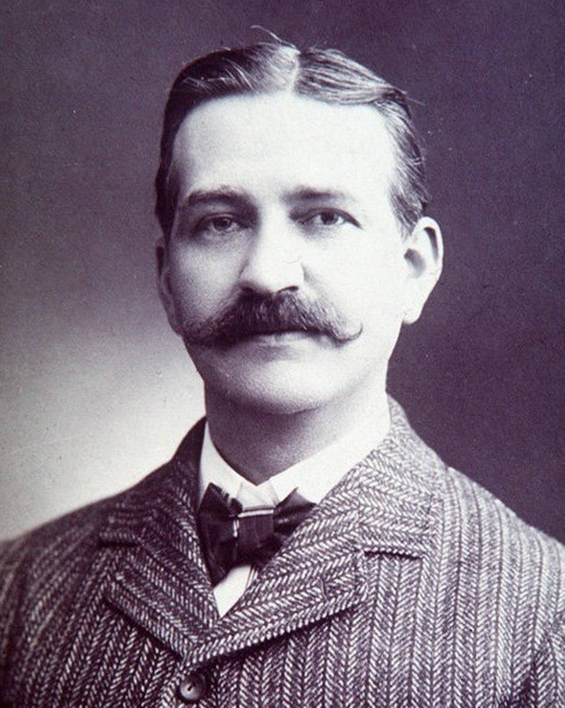

Lyman Frank Baum was an American author, actor, and independent filmmaker best known as the
creator, along with illustrator W. W. Denslow, of one of the most popular books in American children's
literature, The Wonderful Wizard of Oz, better known today as simply The Wizard of Oz.

He wrote thirteen sequels, nine other fantasy novels, and a plethora of other works (55 novels in
total, 82 short stories, over 200 poems, an unknown number of scripts, and many miscellaneous writings),
and made numerous attempts to bring his works to the stage and screen.